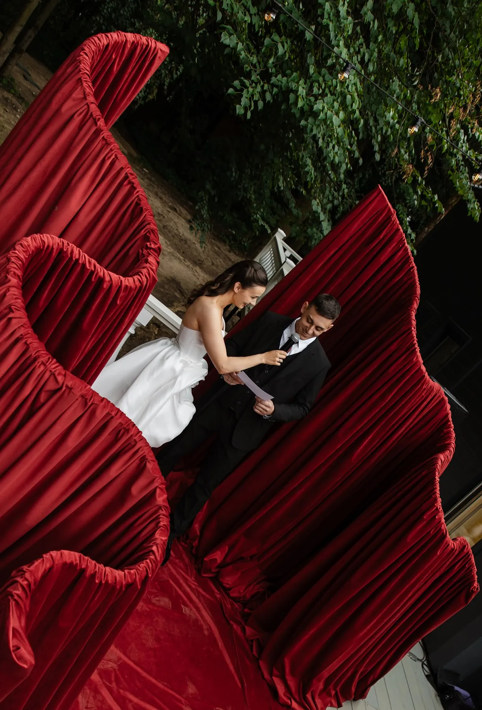

Цветочная инсталляция - это не большой букет, а объект в пространстве: облако над столом, ротонда у воды, скульптура из цветов и ткани в холле. Её запоминают гости, и именно её фотографируют первой. Мы делаем инсталляции из цветов на заказ для компаний, ресторанов и свадеб в Москве и Подмосковье - от идеи и каркаса до монтажа и демонтажа. Рассказываем, какие бывают форматы, что входит в заказ и как подготовить заявку.
Для компаний · мероприятия
Нужно оформить приём, конференцию или корпоратив?
Расскажите о дате, площадке и задаче — предложим идею и посчитаем смету за 24 часа. Работаем по договору со счётом, монтаж и демонтаж — по таймингу площадки.
Декор корпоративных мероприятий →Какие бывают цветочные инсталляции
- Подвесная - облако или гирлянда из цветов над столом, баром, сценой; работает там, где на полу нет места.
- Арка, рама, ротонда - объект, в который входят гости; для церемонии, входа или фотозоны.
- Напольная скульптура - объёмная форма из цветов, зелени и ткани в холле, атриуме или у сцены.
- Цветочная стена - плоский фон для фото и выступлений; подробнее - в статье про цветочную стену на заказ.
- Витринная - сюжет за стеклом, который читается с улицы.
Для каких задач заказывают
Мероприятия компаний - приём, презентация, юбилей бренда: инсталляция становится главным кадром вечера; подробнее - в статье про цветочное оформление мероприятий. Рестораны, отели, бизнес-центры - сезонный акцент в лобби или зале. Магазины и шоурумы - открытие или новая коллекция. Свадьбы - арка, ротонда, облако над президиумом. Новогодний вариант для лобби и атриума - в статье про новогоднюю инсталляцию для холла.
Как это выглядит в наших работах
На свадьбах лета 2026 года мы делали инсталляции разного масштаба. У Артёма и Екатерины - скульптурную волну из красного бархата на террасе усадьбы, у Михаила и Елизаветы - ротонду, увитую зеленью с розовыми и белыми цветами, на берегу. Приёмы те же, что и для коммерческих пространств: каркас, ткань, живые цветы и свет собираются в один объект под конкретное место.


Живые, стабилизированные или искусственные цветы
- Живые - самый богатый вид и запах; для одного вечера или нескольких дней с планом обновления.
- Стабилизированные - держат вид неделями; для витрин и холлов.
- Качественные искусственные - для долгих сроков и мест, где живым цветам тяжело: жара, сквозняк, высота.
Часто сочетаем: живые цветы в зоне, к которой подходят близко, искусственные - под потолком.
Что входит в заказ
- Идея и эскиз под ваше пространство, палитру и бренд.
- Каркас и крепления: подвес, утяжеление, согласование с площадкой.
- Флористика, текстиль, свет.
- Доставка, монтаж в удобное окно (ночью или до открытия) и демонтаж.
Из чего складывается смета
- Размер и формат: подвес, арка, скульптура, стена.
- Материалы: живые, стабилизированные или искусственные цветы, ткань.
- Срок стояния: один вечер, неделя, сезон.
- Сложность монтажа: высота, подвес к потолку, ночное окно, требования площадки.
Смету по позициям присылаем за 24 часа. Как считаются мероприятия целиком - в статье про стоимость оформления мероприятия.
Как заказать и сроки
Пришлите фото места, примерные размеры и высоту потолка, дату и срок стояния, палитру или брендбук и пару референсов - предложим идею и посчитаем смету за 24 часа. Крупную инсталляцию лучше заказывать за 3-4 недели: нужно время на эскиз, каркас и закупку цветов. Работаем в Москве и Подмосковье, для компаний - по договору со счётом. Деловые мероприятия - на странице «Корпоративы», свадьбы - «Свадебный декор».
Частые вопросы
Что такое цветочная инсталляция?
Объёмный объект из цветов, зелени, ткани и света: облако, арка, ротонда, скульптура или стена под конкретное место.
Можно ли сделать подвесную инсталляцию из цветов?
Да, если площадка разрешает крепление к потолку или конструкции, - точки подвеса согласуем заранее.
Делаете ли вы цветочные инсталляции в Москве для компаний?
Да, в Москве и Подмосковье: для мероприятий, холлов, ресторанов и витрин, по договору со счётом.
Сколько стоит цветочная инсталляция?
Зависит от размера, материалов, срока стояния и сложности монтажа. Смету по позициям присылаем за 24 часа.